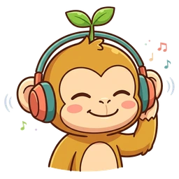
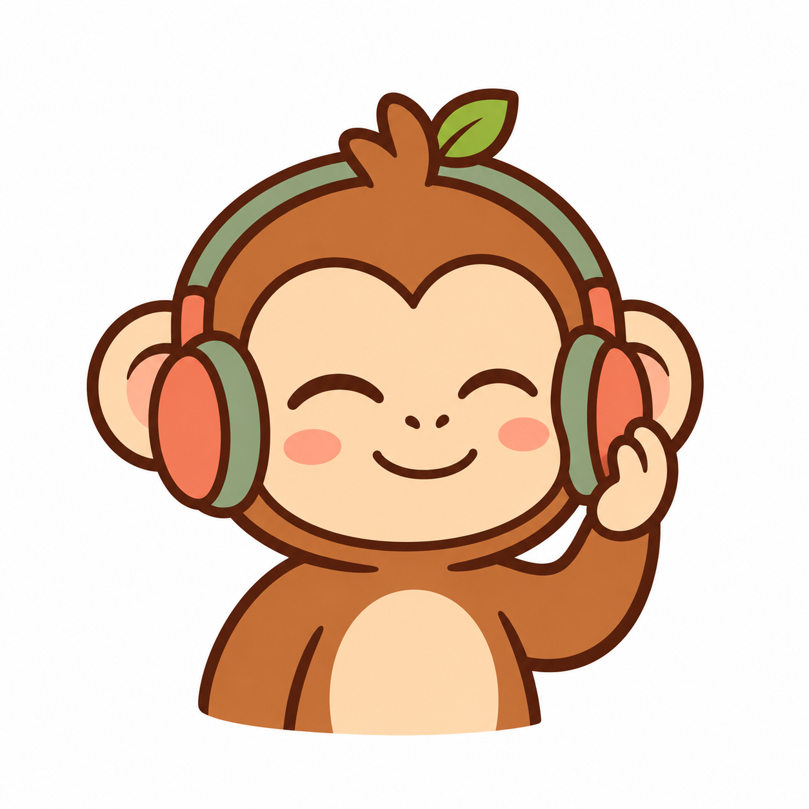
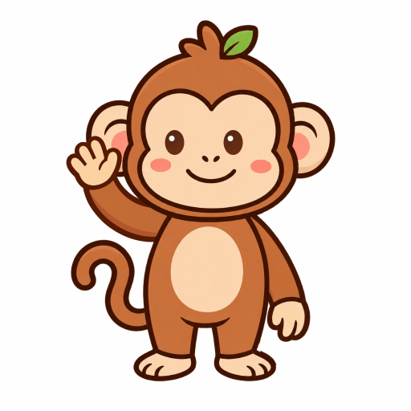
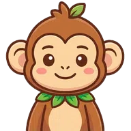
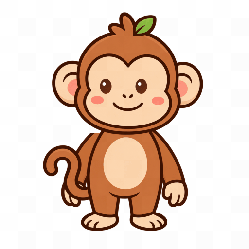
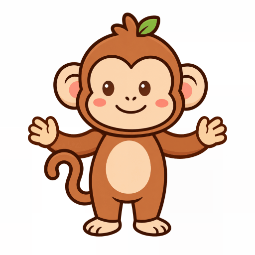

MONKİ / SON RÖTUŞLAR 01
Aynı karakter, tutarlı hareket.
Dinleme çizimi, göz kırpma ve kutlama yenilendi. El sallama, omuz kapağı gövdenin arkasına alınarak yeniden kuruldu. Kareler arasında yüz ve gövde oranları sabit.
Dinleme · mevcut

Dinleme · yeni

El sallama · main

El sallama · yeni

Göz kırpma · main

Göz kırpma · yeni

Kutlama · main
Kutlama · yeni

Tasarımlar ve hareketler prototiptir; üretim uygulaması değiştirilmedi. Hareket azaltma tercihinde sabit poz gösterilir.